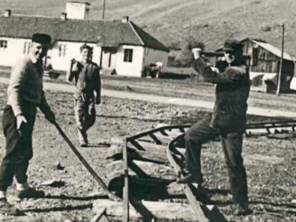
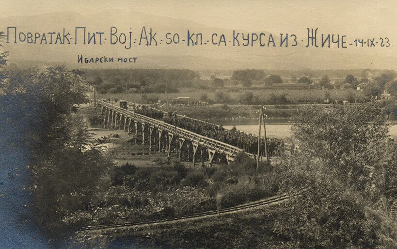
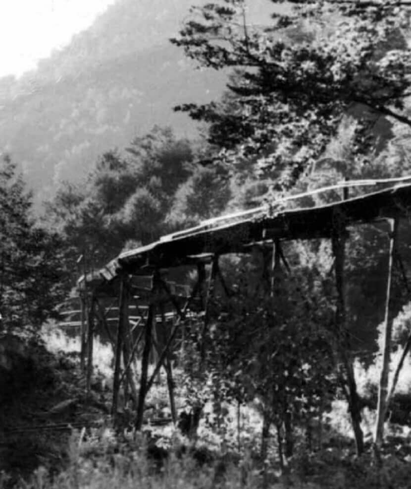
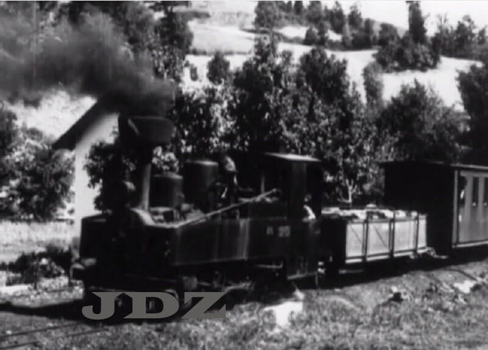
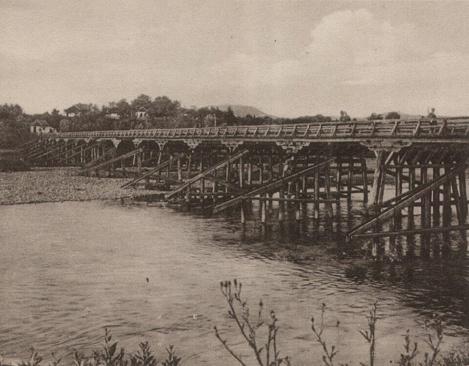
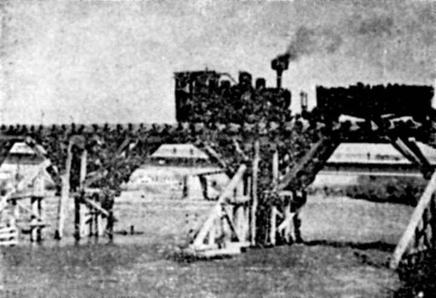
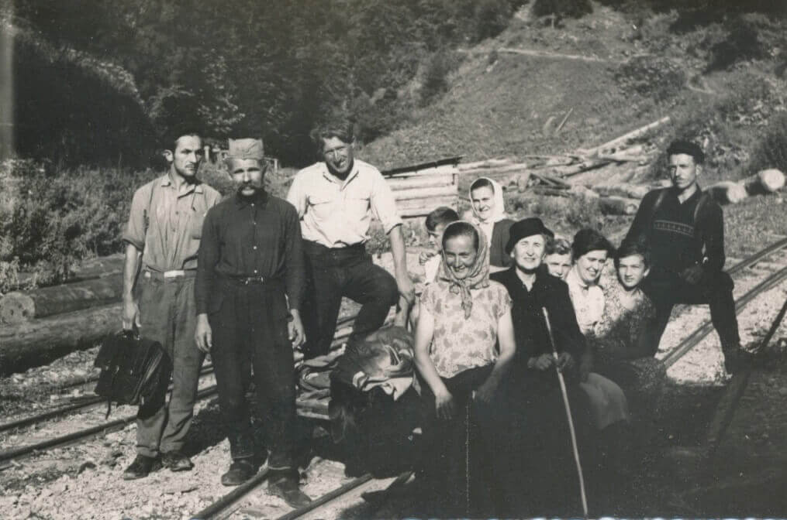

др Милан Матијевић — Гочка пруга, 2015.
Изградња Гочке пруге
Услед повољних климатских услова, на планини
Гоч
се преко 105 година организује интезивна експлоатација дрвне
масе. Коришћење шумских ресурса на Гочу у организованом облику
забележено је још 70-их година XIX века када се и граде бројне
стругаре на водени погон, стругаре - поточаре.

Године 1916. за време
аустроугарске окупације Краљева, саграђена је шумска пруга уског колосека
за експлоатацију
богатих шума на планинском масиву Гоч. На изградњи пруге су у
почетку радили аустријски и бугарски војници, а затим, у
недостатку радне снаге, принудно је на кулук довођено локално
становништво из околних села планине Гоч, као и италијански и
руски ратни заробљеници. Пругом су саобраћали наменски возови за
превоз огревног дрвета за целулозу и трупаца на релацији Сокоља
- Каменица - Краљево, у дужини од 24 км.
Гочка пруга између два светска рата
После ослобођења Србије, 1918. године, Гочка пруга прелази у
државно власништво. Поправља се мост на Ибру и оспособљава за
саобраћај. 1920. године сеча и отпремање буковог дрвета се
уступа "Акционарском друштву Конзорција Гоч", које послује до
1925. године. Током 1923. године гради се траса пруге, ширине
600 мм и дужине 14 км, на релацији Подунавци - Грачац. Током
1925. године фирма "Кнежевић - Радовановић" из Краљева гради још
један крак пруге дужине 4 км. Након престанка са радом предузећа
"АД Конзорцијум Гоч", 1925. године, делатност сече дрвета за
прагове у Сокољи наставља фирма "Импрегнација прагова" из
Крушевца, које послује до 1936. године.

Године 1936. Министарство железница уступа Гочку пругу
Министарству шума и руда, које право на сечу дрвета и
експолатацију Гочке пруге преноси у надлежност Дирекције шума.
Исте године Дирекција шума намерава да укине Гочку пругу због
нерентабилности пословања. Међутим, након чланка у локалним
краљевачким новинама "Народна самоуправа" и заузимања сенатора
Петра Богавца, Дирекција шуме не укида, већ уступа под концесију
на 10 година експолатацију Гочке пруге Миљку Петровићу,
индустријалцу из Краљева.
Рижина пруга
Када се говори о историји Гочке пруге, особа која је имала
најзначајниjи допринос и чије је име до данашњих дана остало
синоним за Гочку пругу је
Миљко Петровић -
Рижа.

Индустријалац Миљко Петровић, са својом фирмом у улици Југ
Богдана број 68 у Краљеву, дужи низ година послује са Дирекцијом
шума за коју врши сечу шуме на Гочу. По преузимању концесије за
експлоатацију Гочке пруге, 1936. године, Миљко Петровић подиже
кредит како би обновио неопходну инфраструктуру. Обнавља
запуштен и оштећен колосек Гочке пруге, затим врши поправке
парних локомотива, поправља зграду ложионице, поред пруге
поставља табле са упозорењем за локално становништво, за потребе
ложионице врши набавку алата и машина. На Гочу гради доста
помоћних објеката и стругара. За потребе стругаре на електрични
погон гради две мање хидроелектране, капацитета 1000 киловата, у
Сокољи.
Упоредо са радовима,
Миљко Петровић
ради и на унапређивању организације рада, ефикасности и
ефективности транспорта обрађеног дрвета до пруге. У ту сврху
форсира изградњу водоточила које су се популарно звале водене
риже.

Риже су била искована корита од дасака, постављене са благим
падом, у које се уводи вода ради лакшег и бржег транспорта
балвана до утоварних станица. У периоду од преузимања концесије
до II светског рата Миљко Петровић гради преко 50 км водених
рижа на Гочу и околним местима и тако сакупља воду са планинских
потока и река. Због своје преданости изградњи водених рижа, које
су му омогућиле смањење транспортних трошкова и повећање
конкурентности на тржишту, Миљко Петровић добија надимак Рижа.
Убрзо, локално становништво Гочку пругу назива Рижина пруга, а
мост на Ибру преко којег је прелазила пруга Рижин мост.
Индустријско предузеће "Миљко Петровић" пословало је успешно и
запошљавало око 220 радника са сталним и сезонским запослењем.
Извозио је резану грађу за Грчку, преко фирме грчког трговца
Диме Кувалије из Солуна.
Гочка пруга у време немачке окупације Краљева
Уласком немачке војне силе у Краљево, 1941. године, фабрике и
све фирме су престале са радом. Формирана Команда места у
Краљеву становништво и све фирме ставила је под контролу немачке
војне силе. Издато је наређење да фирме отпочну са радом. С
обзиром да је фирма "Индустријско предузеће Миљко Петровић"
производила огревно дрво и резану грађу, за коју је била
заинтересована окупациона власт, издато је наређење да фирма
настави са радом. Велика стругара у Краљеву је наставила са
резањем трупаца у залихе. Нови довоз трупаца и огревног дрвета
са Гоча није могао да се врши због тога што је Гоч запосео
партизански одред "Јово Курсула". Највећи број бораца у овом
одреду био је избегао из Краљева од окупационе власти. Након
одласка
партизанског
одреда "Јован Курсула"
са Гоча на нове положаје ван Краљева, немачка окупациона власт
успоставила је контролу над радилиштима, на којима се секло дрво
на Гочу. Издато је наређење Миљковој фирми да отпочне са сечом
шума. Гочки воз је отпочео поново да саобраћа и превози дрва са
Гоча у много мањем обиму.
Током напада партизана и четника на Краљево, са намером да
разбију немачку блокаду, у борбама је погинуло око 40 немачких
војника и више њих рањено. Због претрпљених губитака немачких
окупационих сила је извршила хапшење талаца у Краљеву. У
спроведеној рацији ухапшено је 3 радника и 3 ученика из
"Шумско-индустријског предузећа Миљко Петровић", и један шумар
из шумског газдинства. Ухапшени су одведени у "лагер железничке
радионице" и
стрељани са осталим невиним таоцима. После стрељања немачка власт је
успоставила строжу контролу
над радом "Шумско-индустријског предузећа Миљко Петровић".
У овим условима предузеће је наставило са радом, у смањеном
обику, под руководством Миљка Петровића. На Гочкој прузи
саобраћао је и даље тзв. "Рижин воз" до "претовара" под
контролом немачке окупационе власти. Немачка опкупациона власт
је највише користила сортименте трупаца - балвана, а знатно мање
целулозног и огревног дрвета.
Гочка пруга после ослобођења Краљева
После ослобођења Краљева 1944. године,
Миљко Петровић
је ухапшен од стране Нове народне власти, под оптужбом да је
сарађивао са немачким окупатором, зато што је његова фирма
радила за време немачке окупације Краљева. У судском процесу,
пред Среским судом у Чачку осуђен је 1945. године на одузимање
грђанске части и стечене имовине и на 7 година тешког присилног
рада. Након делом одслужене казне, Миљко Петровић је живео у
Краљеву. Преминуо је Краљеву 1968. године. Миљко Петровић, бивши
индустријалац из Краљева посмртно је рехабилитован 2006. године
одлуком Окружног суда у Београду.
Након ослобођења земље 1944. године, извршено је
национализација
имовине и реорганизација државних установа. Шумске управе
формиране су по принципу организације пре рата, а затим издата
забрана експлоатације шума приватним предузећима. По овој
забрани престало је са радом "Шумско-индустријско предузеће
Миљко Петровић", које је вршило експлоатацију шума на планини
Гоч и експолатацију Гочке пруге.
Гочка пруга са ложионицом, после ослобођења 1945. године,
потпала је под управу
ЈДЖ
и Железничког чвора у Краљеву. Према Плану
административно-оперативног руковођења, успостављена је сарадња
око утовара и превоза дрва са Гоча за Краљево, између
Железничког чвора Краљево и Окружне дирекције шума из Краљева.
Гочка пруга је време обнове радила непрекидно, пуним
капацитетом.

Ради обезбеђења огревног дрвета за становништво и дрвне масе за
обнову ратом разорене привреде, повећана је сеча шума на Гочу и
убрзан је превоз посечене дрвне масе. За испуњење планских
задатака у обезбеђењу огрева за народ и дрвене грађе за обнову
привреде органозован су од 1945. до 1947. године омладинске
радне акције. Радило се на сечи шума, утовару на вагоне и превоз
из Сокоље до претовара у Краљеву. Са претовара, дрва су
утоварана у вагоне узаног и нормалног колосека за даљи
транспорт.
У току 1950. године основана је Генерална дирекција индустрије
НРС, која је даље
спровела реорганизацију шумарства и дрвне индустрије. У оквиру
нове реорганизације Гочка пруга је предата у експлоатацију овом
државном предузећу. Приликом предаје Гочке пруге у употреби је
било 57 вагона и 8 локомотива на парни погон и ложионица са
радионицом, тј. 3 осовинске парне локомотиве, 5
четвороосовинских парних локомотива, 21 вагон за превоз огревног
дрвета, 35 трукова - плато вагона за превоз трупаца и 1 затворен
теретни вагон серије Г. 1950. године на овој прузи је било
запослено 16 машиновођа, 16 ложача и 114 кочничара.
Укидање Гочке пруге
Инспекција Министарства саобраћаја је више пута налагала
предузећу ДК "Гоч" да, због дотрајалости, изврши реконструкцију
дрвеног моста на Ибру преко кога је прелазила Гочка пруга. У
вези са овим налозима ДК "Гоч" није ништа предузимао услед
недостатка средстава. Због насталог стања инспекција је 1958.
године забранила употребу моста за саобраћања Гочке пруге преко
њега. У међувремену је завршена изградња у рату срушеног
друмског гвозденог моста преко Ибра.

У Дрвном комбинату "Гоч" вршени су прорачуни око реконструкције
дрвеног моста преко Ибра и закључено је да се не исплати улагање
у његову реконструкцију. Због тога је донета одлука да се
допремање дрвета и трупаца са Гоча врши камиониским путем, а да
се Гочка пруга избаци из експолатације и укине као нерентабилна.
Крајем 1959. године отпочела је демонтажа колосека. Локомотиве
су предате Железничком чвору Краљево. Две локомотиве са Гочке
пруге пренете су на шљункару поред Западне Мораве у Подунавцима.
Ове локомотиве су вршиле превоз шљунка до железничке станице у
Подунавцима који је служио за насипање трасе замене узаног
колосека нормалним колосеком на релацији пруге Крушевац -
Краљево - Чачак. После 42 године свога неуморног рада, Гочка
пруга, или "Рижина пруга", како су је многи звали отишла је у
историју.

За саобраћање Гочке пруге биле су везане бројне генерације.
Многи су нашли запослење на Гочкој прузи. Мештанима села испод
Гоча, Столова и шире, Гочка пруга била је је једина саобраћајна
веза са Краљевом. Учесници омладинских радних акција на сечи
дрва на Гочу "Рижиним возом" долазили су на радну акцију и
враћали се са ње. Омладинске организације, планинарска друштва и
грађани превозили су се на уранке.
